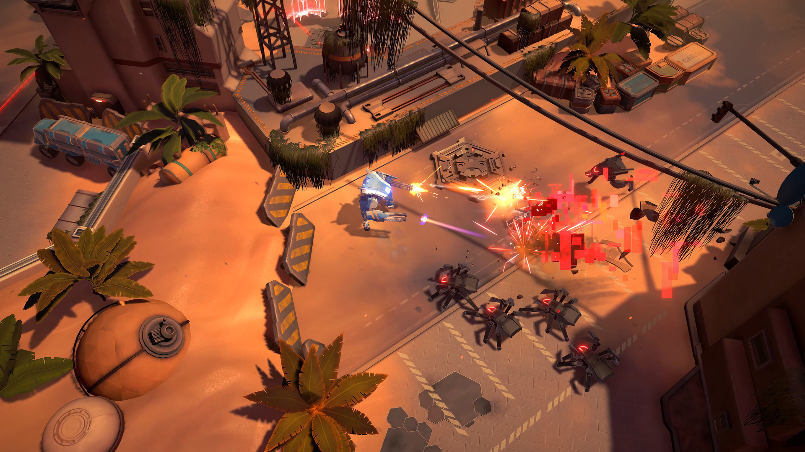

Uragun
as Lead Programmer
I’m responsible for many things in twin-stick shooter game Uragun: gameplay, progression, UI, animations, gameplay, optimisation, shaders etc. While I joined the team as a regular programmer, I wanted to be more involved and gained trust to, at some point, take over a lead role in project.